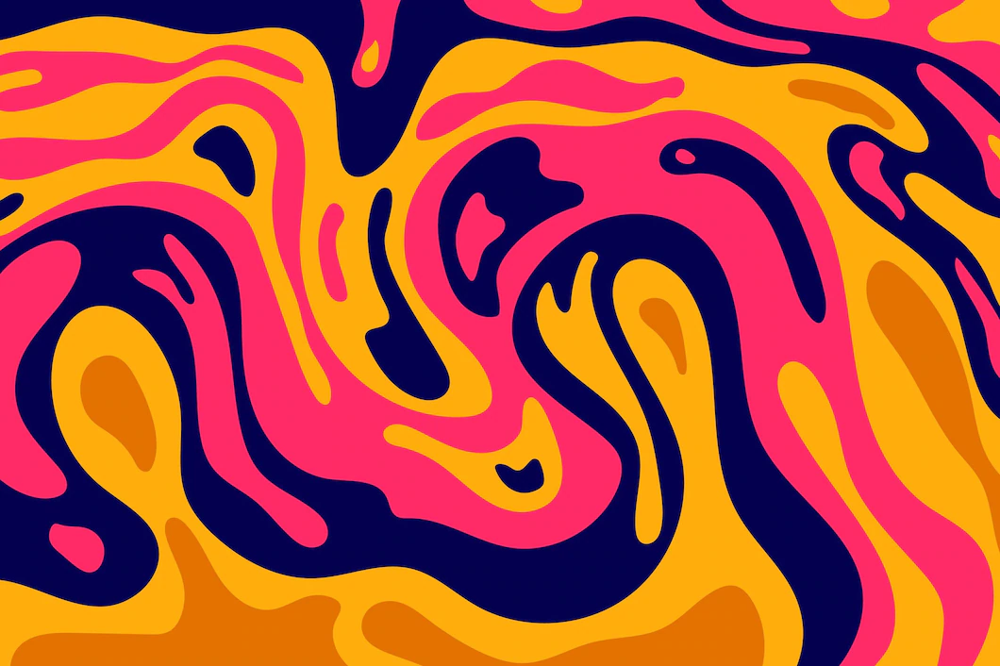

Sports
I practice running and it's therapy for me. I prefer to practice outdoor activities and I also like other sports, such as biking, hiking and racquetball.

Technology
Technology is just amazing! It's very challenging and I feel every day more excited to learn more. I am following a line of daily studies.
New things
I love meeting new things, people, places, cultures, stories. Routine is a problem for me, but my psychologist said it's okay to be like this.
Music
Music is therapy! From a very young age I practice and study music. I've played several instruments and at the moment I play string instruments (cavaco and guitar).